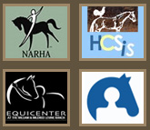

Update 20 June 2009
"I have been involved with Pegasus since 2005 as one of three unpaid Directors. As a not-for-profit organisation with charitable status, it grew from only a few riders to more than 95 clients in 2008" READ MORE....

THERAPEUTIC RIDING
So why use a horse when you can use a piece of equipment? It's all in the movement: up and down, side-to-side and forward to back...all at the same time. Throw in changes in speed, variables in rhythm and a whole host of sensory inputs and you've got motion that impacts your brain and body in significant ways.
Did you know that by simply sitting astride a moving horse, a person's sense of coordination and stability could improve? By experiencing the constant repetition of the horse's stride, and by absorbing this rhythm into our hips, a person's back and trunk muscles kick into action. This stimulates nerve patterns that have lain dormant, and allows tight ligaments to relax and become more supple.
Therapeutic riding is an umbrella term covering several distinct methods of equine therapy including therapeutic sport riding, hippotherapy and vaulting.
Equine Therapy offers benefit to a wide range of physical issues. For example, individuals who have spasticity (an involuntary muscle reaction), riding a horse in a therapeutic situation has been shown to reduce the affliction. Many individuals along the Autistic Spectrum Disorder (ASD) experience significant improvements in sensory integration as a result of the dynamic movement.
Equine Therapy and its benefits have been recognized for many years. It is a proven method of addressing the physical, mental, emotional and developmental capabilities of individuals with disabilities, functional limitation or medical issues. There is a healing interaction between horses, riders and the people who help them.
Riding encourages:
- Correct Muscle Tone
- Cognitive Activity
- Sensory Integration
- Gross & Fine Motor Skills
- Increased Physical Stamina
- Proper Posture
- Independence & Social Skills
- Emotional Stability
- Self Esteem
- Vocalization
- Smiling
People with a disability are part of society and must not be viewed as a marginalised group. All over the world, the success of riding schools for the disabled is mainly because horses give unconditional love to anyone. Unlike society, they do not care how you look and what you can do; if you show trust in them, they will trust you too.
There are more than 300 therapeutic riding centres in the USA. Since 2004 I have become acquainted with four centres, each of which operates to the highest standards and are totally committed to what they do.
ctrcinc.org
The Colorado Therapeutic Riding Center (CTRC) is a NARHA Premier Therapeutic Riding Center in Longmont, Colorado devoted, since 1980, to serving children and adults with disabilities. As the oldest and largest therapeutic riding center in Colorado, and one of the largest in the nation, CTRC serves over 700 riders through their dynamic programs and has an impressive work force of over 1,000 volunteers each year. At CTRC, not only are the participants bodies nurtured but their minds and spirits as well. For over a quarter of a century, those involved with CTRC has witnessed the profound, life enhancing benefits of equine assisted therapeutic services.
equicenterny.org
EquiCenter Inc began its programming in Mendon, New York in May of 2004, offering a number of therapeutic riding, hippotherapy, vaulting and horsemanship (equine facilitated mental health) sessions. Its goal is to provide a safe, appropriate, productive and enjoyable environment where participants can work toward their individual goals.
thorncroft.org
The mission of Thorncroft is to help build the physical, emotional and mental well being of all people; particularly those with special needs, through establishing an atmosphere of cooperation, respect and love in an equestrian environment. They are committed to a mainstreaming approach of teaching horseback riding, and to promoting the development of new and independent therapeutic riding programs.
highhopestr.org
The mission of High Hopes is to improve the lives of people with cognitive, physical, and emotional disabilities through the benefits of therapeutic horseback riding and other equine-assisted activities, while serving the therapeutic riding profession through training and education. Beginning as a group of nomads with borrowed horses, High Hopes has become a leader both in providing therapeutic riding services and in setting the standards for service, training and education in the profession.